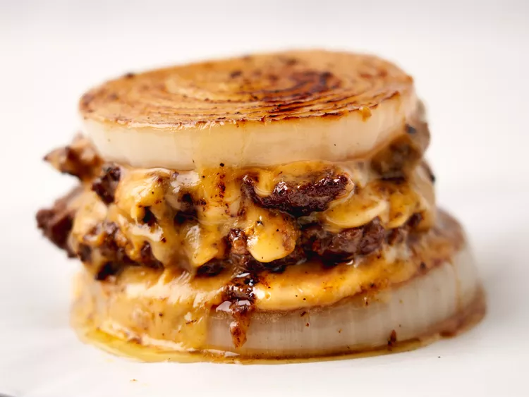

Copycat Onion Wrapped Flying Dutchman

Description
This copycat onion wrapped flying Dutchman is essentially a cheeseburger served in an onion "bun" that is tender, crisp, and sweet, and pairs perfectly well with the richness of the meat.
Ingredients
- 1 large white onion
- 3/4 pound ground beef round
- 1 teaspoon kosher salt
- 1/2 teaspoon freshly ground black pepper
- 4 slices American cheese, cut into thirds
- 1/4 cup mayonnaise
- 1 tablespoon ketchup
- 1 teaspoon mustard
- 1 tablespoon sweet pickle relish
Steps
- Cut 4 1/2 -inch thick slices from the center portion of the onion and discard the smaller ends for another use. Divide beef into 4 portions and form each portion into a very thin patty. Season patties with salt and pepper.
- Heat a large skillet over medium-high heat. Working in batches, add 2 onion slices to the pan and cook, undisturbed, about 2 minutes. Add 2 patties and continue to cook until golden brown, 2 to 3 minutes. Flip onion and burger patties and continue to cook until golden brown pressing the burger as it cooks.
- Add 2 cheese slices to the top of one onion slice and both burger patties. Place one burger on the cheese-topped onion slice and top with the second burger patty. Place remaining onion slice over burger and press down. Flip burger and cook 1 to 2 more minutes. Remove from pan and set aside. Repeat with remaining onions, burger patties and cheese.
- Combine mayo, ketchup, mustard, and pickle relish in a small bowl and stir well. Serve with burgers.